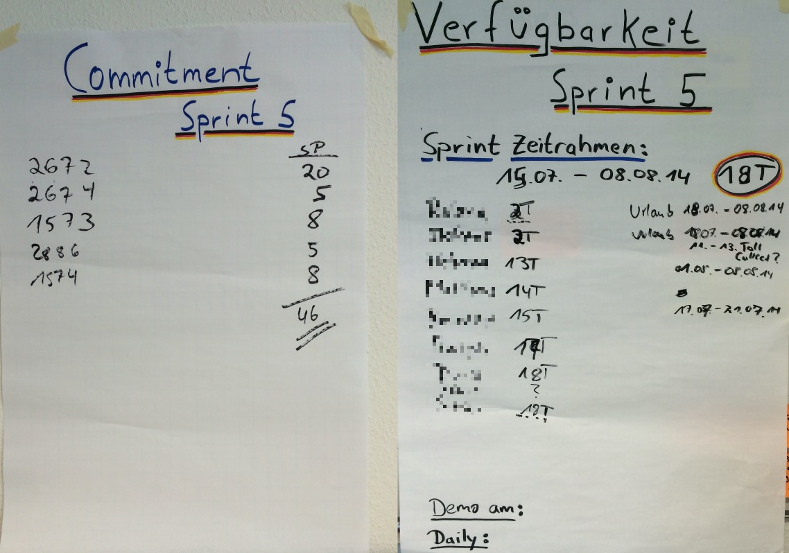

<!DOCTYPE html>
<html lang="en">
  <head>
    <meta charset="utf-8" />
    <meta name="viewport" content="width=device-width, initial-scale=1.0, maximum-scale=1.0, user-scalable=no" />

    <title>Scrum Introduction</title>
    <link rel="shortcut icon" href="./favicon.ico"/>
    <link rel="stylesheet" href="./dist/reveal.css" />
    <link rel="stylesheet" href="./dist/theme/night.css" id="theme" />
    <link rel="stylesheet" href="./css/highlight/zenburn.css" />

  </head>
  <body>
    <div class="reveal">
      <div class="slides"><section ><section data-markdown><script type="text/template">

# Scrum Introduction

An introduction to Scrum for usage in [Fontys venlo](https://fontysvenlo.nl/de/) Software Engineering and Business Informatics study

</script></section><section data-markdown><script type="text/template">

## Scrum taken serious

Funny example for usage of scrum: [Scrum Master - Funny movie about The Power of Scrum](https://youtu.be/P6v-I9VvTq4)

</script></section></section><section  data-markdown><script type="text/template">

## Topics

- What is Agile?
- What is Scrum?
- Why Scrum?
- Scrum Framework
- Teamwork: Roles in Scrum
- Meetings in Scrum
- User Stories
- Performance

</script></section><section  data-markdown><script type="text/template">

## What is AGILE?

- Time focused<!-- .element: class="fragment" -->
- Iterative<!-- .element: class="fragment" -->
- Incremental product development<!-- .element: class="fragment" -->
- Deliver small pieces<!-- .element: class="fragment" -->
- Feedback<!-- .element: class="fragment" -->

<aside class="notes"><p>What does it mean if somebody says, he works agile or uses an agile process?
<strong>Time focused</strong>, usually using Time Boxing: Do not exceed time given for meetings.
<strong>Iterative</strong>, doing the work in iterations, for instance, doing analysis, design, implementation and testing again and again.
<strong>Incremental product development</strong> means creating <strong>small pieces</strong> of functionality and thus
Developing these small pieces
The most important thing in agile is the <strong>feedback part</strong>.</p>
</aside></script></section><section  data-markdown><script type="text/template">

## Agile Manifesto

- Individuals and interactions over processes and tools<!-- .element: class="fragment" -->
- Working software over comprehensive documentation<!-- .element: class="fragment" -->
- Customer collaboration over contract negotiation<!-- .element: class="fragment" -->
- Responding to change over following a plan<!-- .element: class="fragment" -->

<aside class="notes"><p>So what all these agile processes have in common is that they follow the 12 principles of the agile manifesto. This manifesto was developed by some guys, e.g. Robert C. Martin (Uncle Bob), Ron Jeffries (Creator of Spring), Alistair Cockburn (Use Case Expert), Martin Fowler, Kent Beck, Ken Schwaber, Jeff Sutherland… asf.  </p>
<h3 id="individuals-and-interactions-over-processes-and-tools">Individuals and interactions over processes and tools</h3>
<p>Individuals are more important than processes and tools. The people are doing the work.</p>
<h3 id="working-software-over-comprehensive-documentation">Working software over comprehensive documentation</h3>
<p>This does not mean that documentation work should be skipped. It means that only the documentation which is necessary must and should be created. E.g. if </p>
<h3 id="customer-collaboration-over-contract-negotiation">Customer collaboration over contract negotiation</h3>
<p>Have the customer on-board. The customer should work with the team together instead of insisting on contractual parts which can and mainly will change. </p>
<h3 id="responding-to-change-over-following-a-plan">Responding to change over following a plan</h3>
<p>Be able to handle changes - better - embrace changes. Projects will change thus managing changes well means managing the project well. </p>
<h2 id="12-principles">12 Principles</h2>
<p>The 12 principles are based on the Agile Manifesto.</p>
<ul>
<li><p>1  - Our highest priority is to satisfy the customer through early and continuous delivery of valuable software.</p>
</li>
<li><p>2 - Welcome changing requirements, even late in development. Agile processes harness change for the customer’s competitive advantage.</p>
</li>
<li><p>3 - Deliver working software frequently, from a couple of weeks to a couple of months, with a preference to the shorter timescale.</p>
</li>
<li><p>4 - Business people and developers must work together daily throughout the project.</p>
</li>
<li><p>5 - Build projects around motivated individuals. Give them the environment and support they need, and trust them to get the job done.</p>
</li>
<li><p>6 - The most efficient and effective method of conveying information to and within a development team is face-to-face conversation.</p>
</li>
<li><p>7 - Working software is the primary measure of progress.</p>
</li>
<li><p>8 - Agile processes promote sustainable development. The sponsors, developers, and users should be able to maintain a constant pace indefinitely.</p>
</li>
<li><p>9 - Continuous attention to technical excellence and good design enhances agility.</p>
</li>
<li><p>10 - Simplicity–the art of maximizing the amount of work not done–is essential.</p>
</li>
<li><p>11 - The best architectures, requirements, and designs emerge from self-organizing teams.</p>
</li>
<li><p>12 - At regular intervals, the team reflects on how to become more effective, then tunes and adjusts its behavior accordingly.</p>
</li>
</ul>
</aside></script></section><section  data-markdown><script type="text/template">

## What is Scrum?

<!-- .slide: data-background="https://media.giphy.com/media/reKoKNEqzn596/giphy.gif" -->

- Agile Managementframework<!-- .element: class="fragment" -->
  - Ken Schwaber<!-- .element: class="fragment" -->
  - Jeff Sutherland<!-- .element: class="fragment" -->
- Empirical process<!-- .element: class="fragment" -->
- Goal is to produce<!-- .element: class="fragment" -->
- Does NOT ensure success<!-- .element: class="fragment" -->
- Is hard work<!-- .element: class="fragment" -->

[➡ www.scrumguides.org](http://www.scrumguides.org/)<!-- .element: class="fragment" -->

</script></section><section  data-markdown><script type="text/template">

## The Scrum Guide

<!-- .element: class="fragment" -->

</script></section><section  data-markdown><script type="text/template">

- Self organized teams<!-- .element: class="fragment" -->
- Transparency<!-- .element: class="fragment" -->
- Continuous improvement (Inspect and Adapt)<!-- .element: class="fragment" -->
- Priorities set by business<!-- .element: class="fragment" -->
- Iterative steps (Sprints)<!-- .element: class="fragment" -->
- Requirements in backlog<!-- .element: class="fragment" -->
- No specific development method recommended<!-- .element: class="fragment" -->
- Few but strict rules<!-- .element: class="fragment" -->

</script></section><section  data-markdown><script type="text/template">


</script></section><section  data-markdown><script type="text/template">

 ## Agile/Scrum is NOT:

- “Just start to work”<!-- .element: class="fragment" -->
- Everybody can do what she/he wants<!-- .element: class="fragment" -->
- There are no rules<!-- .element: class="fragment" -->
- Nobody needs processes<!-- .element: class="fragment" -->
- Only programming - no planning - docs<!-- .element: class="fragment" -->

</script></section><section  data-markdown><script type="text/template">

## Scrum project profile


<aside class="notes"><p>There are different project types:</p>
<h3 id="innovation">Innovation</h3>
<ul>
<li>Derivative, a derivate of a succesfull product</li>
<li>Platform: a new version of an existing product with much market research needed etc.</li>
<li>Breakthrough product: extremly challending, no real market yet exists. Customers need to experience your product. </li>
</ul>
<h3 id="technology-level-technically-difficult">Technology Level (technically difficult)</h3>
<ul>
<li>Low-Tech: no rechnology risk as good known tech level</li>
<li>Mid-Tech</li>
<li>High-Tech: probably unclear requirements for a long time etc. </li>
</ul>
<h3 id="complexity">Complexity</h3>
<ul>
<li>Assembly: Building straight-forward product</li>
<li>System: Building ships, cars building or complex software programs. </li>
<li>Array: multiple systems, many stakeholders, high risk.</li>
</ul>
<h3 id="time-pressure">Time pressure</h3>
<ul>
<li>Regular: Normal time pressure level - if that can be said in a project. </li>
<li>Fast/Competitive: You need to be fast with your project to be competitive</li>
<li>Time-Critical: Absolutely time crititcal, e.g. rules need to be implemented or a high penalty must be paid. </li>
<li>Blitz</li>
</ul>
</aside></script></section><section  data-markdown><script type="text/template">

# The Scrum roles

</script></section><section  data-markdown><script type="text/template">


<aside class="notes"><ul>
<li>Planning: 1w / 2h, 2w / 4h… max 8h</li>
<li>Review: 1h for 1 week sprint  1w / 1h, 2w, 2h… max 4h</li>
<li>Retrospective: 45m for 1 week sprint  1w / 45m, 2w / 1,5h... Max 3h</li>
</ul>
</aside></script></section><section  data-markdown><script type="text/template">

## Product Owner

- Product Backlog<!-- .element: class="fragment" -->
- Business Value<!-- .element: class="fragment" -->
- Contact person for team<!-- .element: class="fragment" -->

<aside class="notes"><ul>
<li>The product owner is responsible for the product backlog - means makes sure it is up to date, that the product backlog items (usually User Stories) are estimated on time and that they are prioritized. Can and should ask for help of the team!</li>
<li>He is the responsible person for the business value. Thus he is in charge - he answers questions regarding what feature to do next. He either can decide on his own or gets the answer from somewhere else. </li>
<li>Thus he is the contact person for the team regarding all questions. Of course he can delegate, but he is responsible!</li>
</ul>
</aside></script></section><section  data-markdown><script type="text/template">

## Development Team

- 3-9 people<!-- .element: class="fragment" -->
- Estimations<!-- .element: class="fragment" -->
- Delivers releasable increments<!-- .element: class="fragment" -->
- Interdisciplinary<!-- .element: class="fragment" -->
- Self organizing<!-- .element: class="fragment" -->

<aside class="notes"><p>Usually a team consists of 3-9 people. Why? Well, more people, more communication effort. 
The team does the estimations and is doing the work thus after every sprint/iteration deliver an increment. 
The team should be able to do the whole work, meaning having an interdisciplilary team will empower the team to do all the work on its own. 
Nodoby tells the team exactly what and how to do the work. But, the product owner defines what should be done first - priorisation.</p>
</aside></script></section><section  data-markdown><script type="text/template">

## Scrum Master

- Ensures process<!-- .element: class="fragment" -->
- Helps removing impediments<!-- .element: class="fragment" -->
- Moderation<!-- .element: class="fragment" -->
- Coaching<!-- .element: class="fragment" -->

<aside class="notes"><p>The Scrum Master is a coach of the team. With this role he not only ensures that the scrum process will be followed, but he will coach the team how to follow the process. This could mean general coaching on work, but maybe also lecturing for providing agile and scrum knowledge.
He will help removing impediments. This does not mean he will remove them in person, but supporting and finding solution for solving them. 
Usually a Scrum Master is not only a coach but normally experienced person in project environments.</p>
</aside></script></section><section  data-markdown><script type="text/template">

## Product Backlog

- list of everything ➡ for the product (Backlog Items)<!-- .element: class="fragment" -->
- single source of requirements<!-- .element: class="fragment" -->
- Product Owner is responsible<!-- .element: class="fragment" -->
- Product Owner manages Product Backlog<!-- .element: class="fragment" -->
- Product Owner puts new Backlog Items into Product Backlog<!-- .element: class="fragment" -->
- Order of Backlog Items in Product Backlog defines importance <!-- .element: class="fragment" -->
<aside class="notes"><ul>
<li>Product Backlog is a list of everything which might be needed for the product (Backlog Items)</li>
<li>Product Owner is responsible for maximizing the value of the product and the work of the Development team.</li>
<li>Product Owner responsible for managing Product Backlog</li>
<li>Product Backlog is the single source of requirements</li>
<li>PO puts new Backlog Items into PB</li>
<li>Order of PB in PO defines “importance” and thus steers which one to do next</li>
<li>Product Backlog Items can be very coarses grained like:</li>
</ul>
<blockquote>
<p>User Administration or Secure Server Connection </p>
</blockquote>
<p>or they can be very precise:</p>
<blockquote>
<p>As an administrator I want to have a user account blocked on fraud detection, so that this user is not able to use the services anymore. Testcase: When a new user is created AND the user triggers a fraud scenario THEN this user must be blocked in the backend and is not able to login again.</p>
</blockquote>
</aside></script></section><section  data-markdown><script type="text/template">

## Product backlog items as User Stories

### Short and simple description of features from the perspective of the user<!-- .element: class="fragment" -->

> As an Administrator, I want to check and confirm a new blog entry so that it is visible on my webpage.<!-- .element: class="fragment" -->

**Or**<!-- .element: class="fragment" -->

> An Administrator can check and confirm a new blog entry.<!-- .element: class="fragment" -->

</script></section><section  data-markdown><script type="text/template">

## User Stories should follow INVEST acronym

- Independent<!-- .element: class="fragment" -->
- Negotiable<!-- .element: class="fragment" -->
- Valuable<!-- .element: class="fragment" -->
- Estimatable<!-- .element: class="fragment" -->
- Small<!-- .element: class="fragment" -->
- Testable<!-- .element: class="fragment" -->

### User Stories should contain Acceptance Criterias<!-- .element: class="fragment" -->

</script></section><section  data-markdown><script type="text/template">

## Product Backlog example


</script></section><section  data-markdown><script type="text/template">

# Scrum Meetings

</script></section><section  data-markdown><script type="text/template">

## Sprint Planning Meeting

### Participants

- Scrum Master<!-- .element: class="fragment" -->
- Product Owner<!-- .element: class="fragment" -->
- Develoment Team<!-- .element: class="fragment" -->
- Timeboxed: Length roughly 2h per 1week sprint<!-- .element: class="fragment" -->

</script></section><section  data-markdown><script type="text/template">

- Scrum Master teaches how to stay in timebox<!-- .element: class="fragment" -->
- Goals: <!-- .element: class="fragment" -->
  - Which work to complete in the next sprint<!-- .element: class="fragment" -->
  - and how?<!-- .element: class="fragment" -->
- Team decides based on capacity and velocity how much work can be done until end of next sprint<!-- .element: class="fragment" -->
- Outcome: Sprint Goal and Sprint Backlog<!-- .element: class="fragment" -->

</script></section><section  data-markdown><script type="text/template">

## Estimations

- done in Planning Meeting<!-- .element: class="fragment" -->
- Estimate relatively e.g. <!-- .element: class="fragment" -->
  - Story Points<!-- .element: class="fragment" -->
  - T-Shirt Sizes<!-- .element: class="fragment" -->
- How? Playing Planning Poker<!-- .element: class="fragment" -->
- Fibonacci<!-- .element: class="fragment" -->

<!-- .element: class="fragment" -->

</script></section><section  data-markdown><script type="text/template">

<!-- .element: class="fragment" -->

</script></section><section  data-markdown><script type="text/template">

<!-- .slide: data-background="images/sprint-planning-2.jpg" -->

<aside class="notes"><p><!-- .element: class="fragment" --></p>
</aside></script></section><section  data-markdown><script type="text/template">

<!-- .slide: data-background="images/sprint-planning-3.jpg" -->

<aside class="notes"><p><!-- .element: class="fragment" --></p>
</aside></script></section><section  data-markdown><script type="text/template">

## Backlog example

<!-- .element: class="fragment" -->

</script></section><section  data-markdown><script type="text/template">

## Sprint Backlog example

<!-- .element: class="fragment" -->

</script></section><section  data-markdown><script type="text/template">

## Sprint and Daily Meetings

<!-- .element: class="fragment" -->

- Team doing the work in the Sprint<!-- .element: class="fragment" -->

</script></section><section  data-markdown><script type="text/template">

### Daily Meeting

- Daily is NO Management reporting meeting!!!<!-- .element: class="fragment" -->
- Daily Meetings (15 min Timebox)<!-- .element: class="fragment" -->
  - What did I do/finish yesterday<!-- .element: class="fragment" -->
  - What will I do/finish today<!-- .element: class="fragment" -->
  - Issues? (Impediments)<!-- .element: class="fragment" -->
- No detailed discussions in daily<!-- .element: class="fragment" -->
- Getting the team informed about the progress<!-- .element: class="fragment" -->
- Team usually discusses after the meeting<!-- .element: class="fragment" -->

</script></section><section  data-markdown><script type="text/template">

## Sprint Review Meeting

- Time boxed meeting (1h per 1 week) <!-- .element: class="fragment" -->
- Participants usually Development Team, Product Owner, Scrum Master and key stakeholder<!-- .element: class="fragment" -->
- Team demonstrates the results (Done User Stories)<!-- .element: class="fragment" -->
- Product Owner accepts or not accepts User Stories<!-- .element: class="fragment" -->
- Probably new Product Backlog Items occur<!-- .element: class="fragment" -->

</script></section><section  data-markdown><script type="text/template">

## Sprint Review Meeting examples

<!-- .element: class="fragment" -->

</script></section><section  data-markdown><script type="text/template">

### Another Sprint Review Example

<!-- .element: class="fragment" -->

</script></section><section  data-markdown><script type="text/template">

### And another Sprint Review

<!-- .element: class="fragment" -->

</script></section><section  data-markdown><script type="text/template">

## Definition of Done

- What means a User Story thus a feature is done?<!-- .element: class="fragment" -->
- First of all a User Story is functionally done if the Product Owner is “happy” ➡ Acceptance Criteria<!-- .element: class="fragment" -->
- What about the quality?<!-- .element: class="fragment" -->

*Scrum does not allow negotiation according to quality.*<!-- .element: class="fragment" -->

</script></section><section  data-markdown><script type="text/template">

### Setup a Definition of Done - Example

- Code must be Unit tested. Tests GREEN ✅<!-- .element: class="fragment" -->
- Code must be checked in into Version Control System ✅<!-- .element: class="fragment" -->
- Successful Automated build, all tests GREEN ✅<!-- .element: class="fragment" -->
- Code and/or Spec-Review successfully done (or Pair programming) ✅<!-- .element: class="fragment" -->
- Code Coverage >= 85% ✅ 💯<!-- .element: class="fragment" -->
- Installation manual created/updated (if applicable) ✅<!-- .element: class="fragment" -->
- Administration manual created/updated (if applicable) ✅ 📔<!-- .element: class="fragment" -->
- Acceptance test done (Demo for Product Owner) without errors ✅ 🙍<!-- .element: class="fragment" -->
- Demo done on Integration Environment (not on DEV-machine) ✅ 💻<!-- .element: class="fragment" -->
- ...<!-- .element: class="fragment" -->

</script></section><section  data-markdown><script type="text/template">

## Sprint Retrospective

- Most important Meeting<!-- .element: class="fragment" -->
- What went wrong / what went well regarding process / work / people / tools<!-- .element: class="fragment" -->
- Inspect and Adapt<!-- .element: class="fragment" -->
- Plan improvements (actions)<!-- .element: class="fragment" -->
- Scrum Master moderates<!-- .element: class="fragment" -->

</script></section><section  data-markdown><script type="text/template">

### Retro example

<!-- .element: class="fragment" -->

</script></section><section  data-markdown><script type="text/template">

### Another retro example

<!-- .element: class="fragment" -->

</script></section><section  data-markdown><script type="text/template">

### Again a retro example

<!-- .element: class="fragment" -->

</script></section><section  data-markdown><script type="text/template">

## Burndown Chart


<aside class="notes"><ul>
<li>The burndownchart allows to track the performance. There is an optimal Burndown-line (gray) drawn which gives a hint how you are performing. Usually a team does not follow the optimal line, but the trend should do.</li>
</ul>
</aside></script></section><section  data-markdown><script type="text/template">

## How to estimate?

- How much can we do in the next sprint? <!-- .element: class="fragment" -->
- Check what was done in the last sprints<!-- .element: class="fragment" -->
- Velocity is Storypoints DONE in the last sprint(s)<!-- .element: class="fragment" -->
- Average Velocity: 25 SP<!-- .element: class="fragment" -->


</script></section><section  data-markdown><script type="text/template">

## Velocity - Estimated vs Real


<aside class="notes"><ul>
<li>The team captured the total capacity - how many people are available, and also put the estimated value and the real velocity value. This gives a very nice performance view.</li>
</ul>
</aside></script></section><section  data-markdown><script type="text/template">

## Howto start?

See [Howto Start](howto-start.md)

</script></section><section  data-markdown><script type="text/template">

## Additional information

### Books


- Agile Product Management with Scrum (Pichler
- Scrum - Agiles Projektmanagement erfolgreich einsetzen (Pichler)
- Agile Coaching (Davis /Sedley)
- Agile Retrospectives: Making Good Teams Great (Derby / Larson)</script></section></div>
    </div>

    <script src="./dist/reveal.js"></script>

    <script src="./plugin/markdown/markdown.js"></script>
    <script src="./plugin/highlight/highlight.js"></script>
    <script src="./plugin/zoom/zoom.js"></script>
    <script src="./plugin/notes/notes.js"></script>
    <script src="./plugin/math/math.js"></script>
    <script>
      function extend() {
        var target = {};
        for (var i = 0; i < arguments.length; i++) {
          var source = arguments[i];
          for (var key in source) {
            if (source.hasOwnProperty(key)) {
              target[key] = source[key];
            }
          }
        }
        return target;
      }

      // default options to init reveal.js
      var defaultOptions = {
        controls: true,
        progress: true,
        history: true,
        center: true,
        transition: 'default', // none/fade/slide/convex/concave/zoom
        plugins: [
          RevealMarkdown,
          RevealHighlight,
          RevealZoom,
          RevealNotes,
          RevealMath
        ]
      };

      // options from URL query string
      var queryOptions = Reveal().getQueryHash() || {};

      var options = extend(defaultOptions, {"transition":"concave","transition-speed":"fast","slideNumber":true,"history":true,"progress":true,"width":1248,"height":800,"parallaxBackgroundImage":"images/fontys-parallax-all-dark.jpg","parallaxBackgroundSize":"2100px 1024px"}, queryOptions);
    </script>


    <script>
      Reveal.initialize(options);
    </script>
  </body>
</html>
